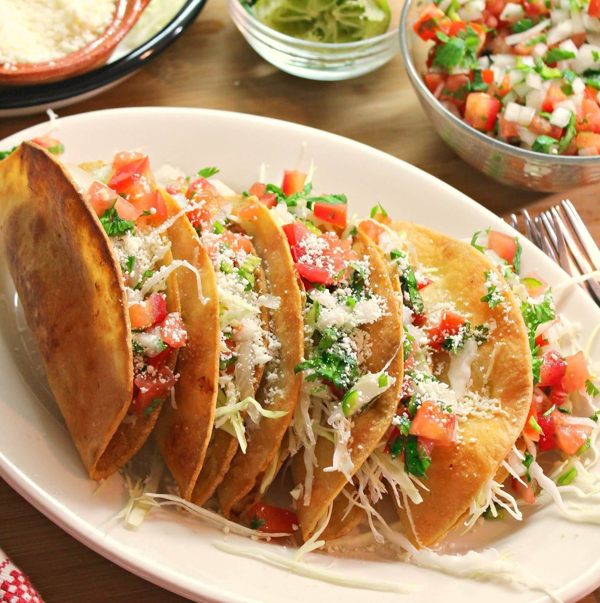

Potato Tacos

Description
I remember my mother making these potato tacos when I was growing up. We loved them! And they're great with mashed potatoes.
Ingredients
- 1 (3.25 ounce) package instant mashed potatoes (such as Idahoan™ Signature Russets Mashed Potatoes)
- ½ cup diced onions
- 1 tablespoon vegetable oil
- salt and pepper to taste
- 8 corn tortillas
- ½ cup vegetable oil for frying, plus more as needed
Garnishes
- Shredded lettuce
- Chopped tomatoes
- tablespoons Shredded Cheddar-Monterey Jack cheese blend
- Salsa
Steps
- Prepare mashed potatoes according to package directions.
- Heat oil in a skillet over medium heat. Sautee diced onions in oil until tender and translucent, 3 to 5 minutes. Add cooked mashed potatoes and season with salt and pepper.
- Place tortillas on a plate. Heat in microwave until pliable, 15 to 20 seconds.
- Place 1/4 cup of potato mixture in each tortilla, fold in half and secure each end with toothpicks.
- Heat oil in a skillet until shimmering. Fry each taco until crispy and golden brown, about 1 minute on each side.
- Remove toothpicks and top with garnishes.
Source: allrecipes